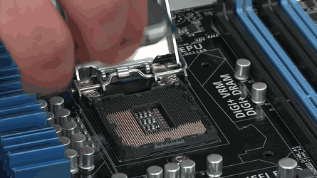

For All Your PC Gaming Information
Welcome to
In the past, if you were looking for a decent CPU with a budget-friendly price, your go-to choice was AMD. However, with their newest generation of Ryzen CPUs, AMD has been on par or even surpassed Intel components on price. The Ryzen 9 3950X boasts 16 cores and 32 threads, exceeding the previous flagship, the Ryzen 9 3900X. And it doesn't just have more cores and threads than its predecessor, the Ryzen 9 3950X has more cache memory and faster processing speeds. It also has the ability to store up to four different profiles for different performance and overclocking settings, so no matter if you're a casual or hardcore gamer or hobbyist artist and animator, you'll always have the best performance you can get out of your CPU. When it comes to Intel, Coffee Lake Refresh processors are designed for desktop usage, and are probably what most people are familiar with. The latest generation of Coffee Lake Refresh processors from Intel includes the i9-9900K which retails for around £550 and gives you 8 cores to work with as well as native integrated graphics. With this CPU, you'll be able to handle not only day-to-day work, but also just about any new game that comes onto the market. Intel also has a new line of Ice Lake processors for laptops, launching the i7-10710U in August of 2019. If you're in the market for a really high-end CPU and have super deep pockets, the third generation of AMD Threadripper units is the best choice for professional 3D modeling artists, animators, filmmakers, and data scientists.
So you've set yourself a budget for a new CPU, but you still have a ton of options when it comes to performance. On the whole, AMD and Intel Processors have been on a pretty even keel when it comes to overall performance. Between the two, it all comes down to whether you need to multitask well or want to play games at their highest settings. If you're looking at buying an AMD processor, be advised that very few of their available CPUs feature integrated graphics. Those that do are referred to as an Accelerated Processing Unit. The ultra-low budget AMD Athlon 240GE retails around £80 and features Radeon Vega 3 integrated graphics. This makes it perfect for low- to mid-grade gaming as well as video streaming for high quality graphics rendering at a low price. However, if you're into higher-end gaming, you'll have to pair a Ryzen 7 or 9 CPU with a dedicated GPU to take your game to the next level.